Instrument lines
Each section carries full catalog numbers, sizes and product photography. Prefer to browse by procedure? Shop by Specialty →
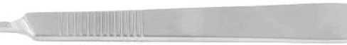
Scalpels, Knives
128 items — handles, blades, operating & post-mortem knives, dermatomes, blade holders
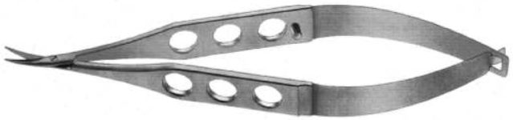
Scissors
782 items — operating, dissecting, vascular, micro, eye & ENT scissors, TC SuperCut lines
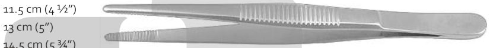
Forceps
593 items — dissecting, tissue, jeweler, splinter, grasping, vascular, eye & micro forceps, incl. TC lines
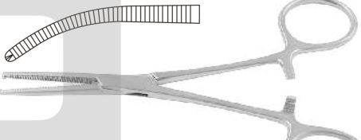
Artery & Hemostatic Forceps
484 items — hemostatic, mosquito, Kocher, Crile, Kelly, Mixter & clip-applying forceps
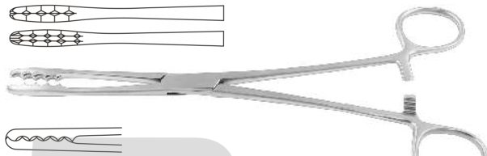
Cotton & Swab Forceps
45 items — sponge-holding, dressing & cotton-swab forceps
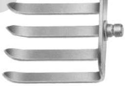
Retractors
654 items — self-retaining & hand-held retractors, wound spreaders, hooks
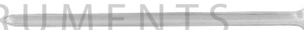
Probes & Applicators
90 items — probes, directors, cotton applicators & seekers
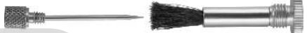
Diagnostic Instruments
45 items — diagnostic sets, laryngeal mirrors, spatulas & tongue depressors
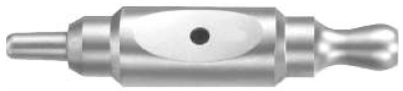
Trocars & Suction
187 items — trocars, cannulas & suction tubes
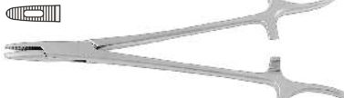
Suture Instruments
293 items — needle holders, suture & ligature instruments
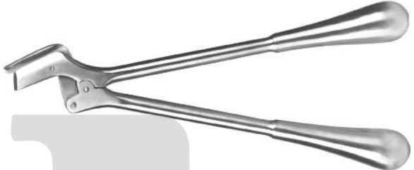
Dressing Instruments
22 items — dressing & bandage instruments
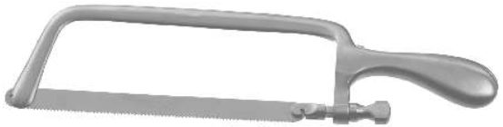
Bone Surgery
1115 items — bone rongeurs, cutters, chisels, gouges, elevators, curettes & saws
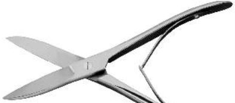
Thorax & Cardiovascular
363 items — thoracic, cardiovascular & vascular surgery instruments
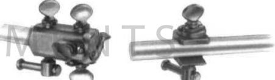
Neurosurgery
427 items — neurosurgical instruments, dura & spinal instruments
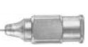
Ophthalmic Surgery
426 items — ophthalmic & micro-eye surgery instruments
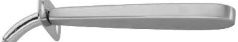
Tracheotomy
39 items — tracheotomy & airway instruments
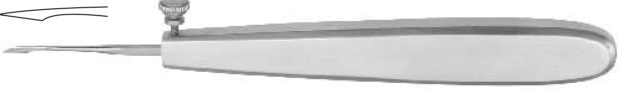
Dermatology
34 items — dermatology & minor-surgery instruments
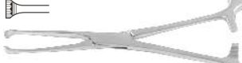
Stomach & Intestinal
200 items — gastro-intestinal clamps & forceps
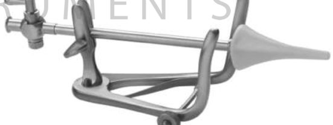
Liver & Gallbladder
108 items — gallbladder & biliary instruments
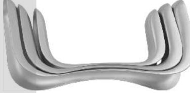
Gynecology
339 items — gynecological specula, forceps & curettes
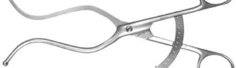
Obstetric
25 items — obstetric forceps & instruments
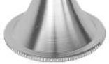
Otology (Ear)
345 items — ear specula, micro-ear & otology instruments
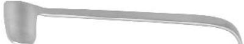
Rhinology (Nose)
334 items — nasal specula, septum & rhinology instruments
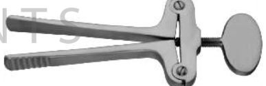
Oral & Maxillofacial
156 items — oral, dental & maxillofacial surgery instruments
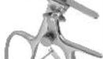
Tonsillectomy
134 items — tonsil & adenoid instruments, snares
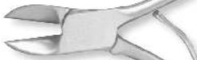
Podiatry
31 items — podiatry & nail instruments
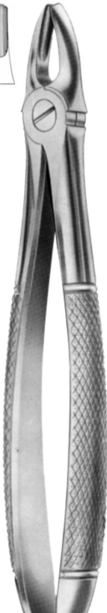
Dental Instruments
1559 items — extracting forceps, elevators, scalers, mirrors, impression trays & full dental range
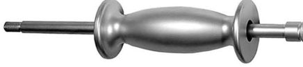
Orthopedic Instruments
762 items — bone rongeurs, chisels, osteotomes, curettes, elevators, drills, saws, spinal & trauma instruments